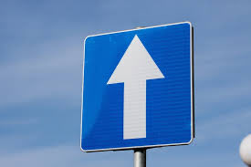
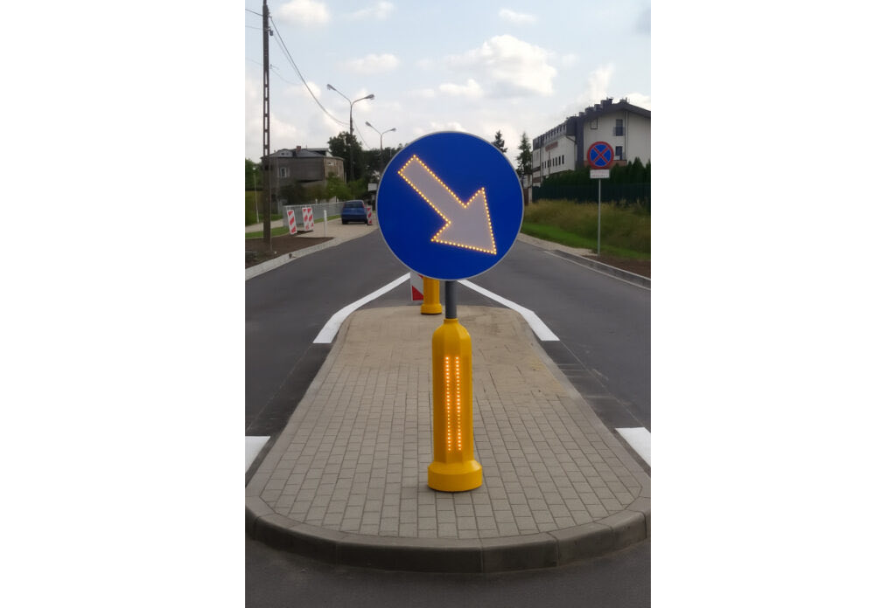
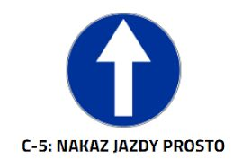

DROGA JEDNOKIERUNKOWA a NAKAZ JAZDY PROSTO | wyjaśnia OSK Tailor Gdańsk
Szkoła jazdy Gdańsk OSK Tailor, jako profesjonalny Ośrodek Szkolenia Kierowców uczy kursantów, że w realnej sytuacji drogowej sekundy decydują o poprawności manewru. Do znaków, które kursanci najczęściej mylą, należą znak C-5 (nakaz jazdy prosto) oraz D-3 (droga jednokierunkowa). Choć oba są niebieskie i mają białą strzałkę, ich znaczenie jest diametralnie inne. Dlatego właśnie jako doświadczona szkoła jazdy w Gdańsku, OSK Tailor przygotował poradnik, który pomoże Ci uniknąć błędów nie tylko na egzaminie państwowym w PORD, ale także podczas codziennej jazdy.
Droga jednokierunkowa a nakaz jady prosto – wyjaśnia szkoła jazdy Gdańsk (OSK Tailor)
Znak D-3 co musisz wiedzieć?

Znak D-3 oznacza drogę, na której ruch odbywa się tylko w jednym wskazanym kierunku. Każda dobra szkoła jazdy w Gdańsku kładzie nacisk na to, by odróżniać ten znak od nakazu jazdy.
Kluczowe zasady na drodze jednokierunkowej:
- Skręcanie w lewo: Masz obowiązek zbliżyć się do lewej krawędzi jezdni (art. 22 ust. 2 pkt 2 ProRD).
- Parkowanie: W obszarze zabudowanym możesz parkować po lewej stronie jezdni.
- Zawracanie: Jest surowo zabronione – grozi jazdą „pod prąd”.
- Wjazd z drugiej strony: Zwykle zabezpieczony jest znakiem B-2 „zakaz wjazdu”.
Najważniejsze cechy tego znaku:
- Po wjechaniu na drogę jednokierunkową, oznaczoną znakiem drogowym D-3, kierujący musi pamiętać o obowiązującym kierunku ruchu np. w sytuacji gdy zjechał do posesji i wyjeżdża z niej na drogę musi uważać aby nie wjechać pod prąd. Dodatkowo kierujący musi zwracać uwagę na następujące przepisy:
- Art 22 ust.6 pkt 1 [ProRD] Zabrania zawracania na drodze jednokierunkowej
- Art 22 ust.2 pkt 2 Zobowiązuje kierującego pojazdem skręcającego w lewo, na drodze jednokierunkowej, do zbliżenia się do jej lewej krawędzi
- Art 49 ust. 1 pkt 7. Zabrania się zatrzymania pojazdu: […] 7) na jezdni przy jej lewej krawędzi, z wyjątkiem zatrzymania lub postoju pojazdu na obszarze zabudowanym na drodze jednokierunkowej lub na jezdni dwukierunkowej o małym ruchu;”
- Wjazd na jezdnię jednokierunkową, może być oznakowany znakiem C-9

Najczęstszy błąd kursantów w interpretacji znaku D-3
Wielu kursantów widząc strzałkę skierowaną w górę zakłada, że oznacza ona obowiązek jazdy prosto. W rzeczywistości na drodze jednokierunkowej można skręcić w lewo lub w prawo – o ile nie ma innych znaków zakazu.
C-5 – Nakaz jazdy prosto

Znak wskazuje, że na skrzyżowaniu lub innym miejscu, w którym odbywa się ruch poprzeczny, NIE WOLNO SKRĘCAĆ.
Na kursie prawa jazdy kursanci uczą się, że znak ten wymusza bardzo konkretny manewr – przejazd przez skrzyżowanie wyłącznie na wprost. Zwróć uwagę, że znak umieszczony jest przed skrzyżowaniem.
Najczęstszy błąd kursantów
Niektórzy kursanci traktują ten znak jak informację o drodze jednokierunkowej. W efekcie próbują skręcić w bok, co oznacza złamanie znaku nakazu i podczas egzaminu praktycznego najczęściej kończy się wynikiem negatywnym.
Droga jednokierunkowa a nakaz jazdy prosto – najważniejsze różnice
Podczas nauki na kursie prawa jazdy warto zapamiętać prostą zasadę: kształt znaku mówi bardzo dużo o jego znaczeniu.
D-3 – droga jednokierunkowa
- znak informacyjny (prostokątny),
- informuje o organizacji ruchu,
- można skręcać w lewo i w prawo.
- znak umieszczony za skrzyżowaniem
C-5 – nakaz jazdy prosto
- znak nakazu (okrągły),
- dotyczy najbliższego skrzyżowania,
- zabrania skrętu w lewo i w prawo.
Najprostsza zasada, którą instruktorzy powtarzają podczas kursu prawa jazdy:
Prostokąt informuje, okrąg nakazuje.
Dlaczego kursanci mylą te znaki?
Niestety, podczas kursu prawa jazdy wiele osób skupia się przede wszystkim na strzałce widniejącej na znaku, zamiast zwracać należytą uwagę na jego charakterystyczny kształt. W konsekwencji to właśnie to przeoczenie staje się najczęstszą przyczyną późniejszych pomyłek na drodze
Najczęstsze przyczyny błędów to:
- stres podczas jazdy,
- szybkie podejmowanie decyzji na skrzyżowaniu i brak doswiadczenia,
- skupienie się na innych pojazdach zamiast na znakach.
Dlatego w trakcie szkolenia instruktorzy często powtarzają, że najpierw należy rozpoznać kształt znaku, a dopiero później jego symbol.
Dlaczego warto wybrać OSK Tailor – Twoja szkoła jazdy Gdańsk
Podczas szkolenia w OSK Tailor Gdańsk nie uczymy „pod egzamin”, ale uczymy bezpiecznego poruszania się w realnym ruchu. Skupiamy się na detalach: najpierw uczymy rozpoznawać kształt znaku, a dopiero potem jego symbol. Dzięki temu stres egzaminacyjny staje się znacznie mniejszy.
Dlaczego my?
- Doświadczeni instruktorzy – cierpliwie tłumaczą zawiłości przepisów.
- Znajomość tras egzaminacyjnych – pokazujemy miejsca w Gdańsku, gdzie te dwa znaki występują blisko siebie.
- Wysoka zdawalność – nasze metody nauczania przekładają się na sukcesy kursantów.
Chcesz dobrze przygotować się do egzaminu i nauczyć się pewnej jazdy w realnym ruchu drogowym?
FAQ – najczęstsze pytania kursantów
Czy na drodze jednokierunkowej można skręcić w lewo?
Oczywiście, że tak. O ile nie występują tam żadne inne znaki zakazu lub nakazu, to na drodze oznaczonej znakiem D-3 można wykonać manewr skrętu zarówno w lewo, jak i w prawo. Należy jednak pamiętać, że swoboda ta jest ograniczona ogólnymi przepisami dotyczącymi ustawienia pojazdu na jezdni
Czy znak nakaz jazdy prosto obowiązuje cały czas?
Nie. Znak C-5 obowiązuje tylko na najbliższym skrzyżowaniu, przed którym jest ustawiony.
Czy pomylenie tych znaków może zakończyć egzamin?
Tak. Złamanie znaku nakazu jazdy prosto jest poważnym błędem i na egzaminie praktycznym bardzo często skutkuje wynikiem negatywnym.
Czy takie sytuacje ćwiczy się na kursie prawa jazdy?
Tak. Podczas jazd szkoleniowych instruktorzy pokazują kursantom miejsca, gdzie często pojawiają się mylone znaki drogowe, aby nauczyć prawidłowej reakcji w realnym ruchu drogowym.
Podsumowanie
Znaki D-3 – droga jednokierunkowa oraz C-5 – nakaz jazdy prosto należą do najczęściej mylonych znaków przez osoby rozpoczynające kurs prawa jazdy.
Choć oba zawierają strzałkę skierowaną do przodu, ich kształt i znaczenie jest zupełnie inne:
🟦 Kwadrat 🔵 Koło: Szybka ściąga
| Cecha | D-3 (Droga jednokierunkowa) | C-5 (Nakaz jazdy prosto) |
| Kształt | Kwadrat / Prostokąt | Koło |
| Typ znaku | Informacyjny | Nakazu |
| Główny przekaz | „Wszyscy jadą w tę samą stronę” | „Masz jechać tylko na wprost” |
| Manewry | Można skręcać w prawo/lewo | Zabrania skręcania i zawracania |
- droga jednokierunkowa informuje o kierunku ruchu,
- nakaz jazdy prosto zabrania skrętu na skrzyżowaniu.
Podczas nauki jazdy warto pamiętać, że kształt znaku ma kluczowe znaczenie – prostokąt informuje, a okrąg nakazuje konkretne zachowanie.